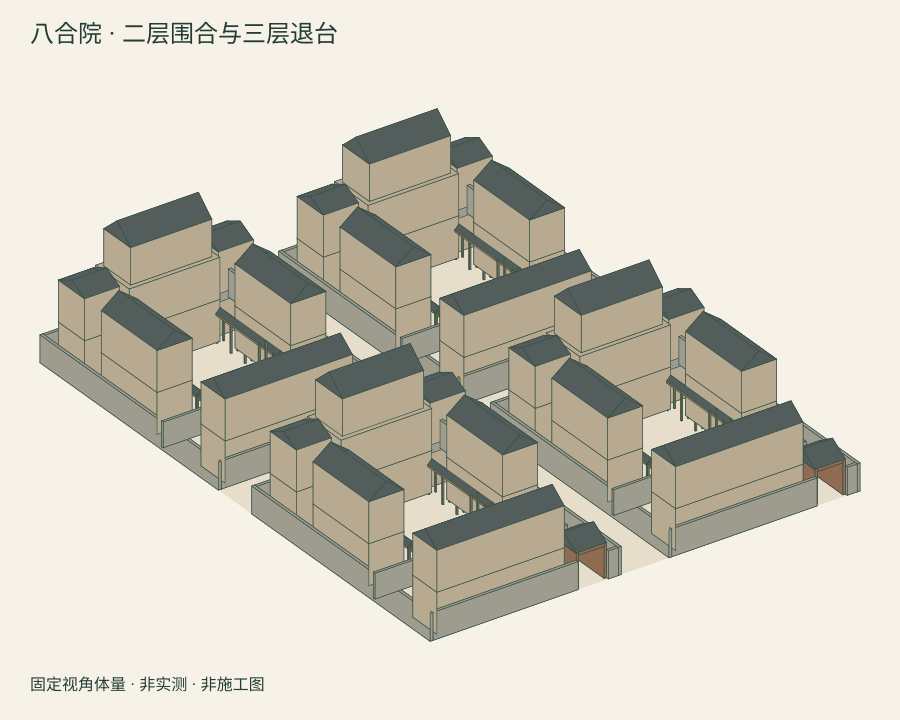

八合院 · 二三层概念
四个两进模块，8个露天院落、116条记录。二层围合，正房局部三层退台；尺寸为假设，非古建加层施工方案。
1. 看整体

2. 选一张图看细节


3. 留一份模型
可用系统打印功能保存PDF。离线使用时，请保留同目录全部文件。
还想旋转看？打开交互实验版
进入可选交互版。交互、移动端布局与键盘操作仍待实际浏览器验收。
四个两进模块，8个露天院落、116条记录。二层围合，正房局部三层退台；尺寸为假设，非古建加层施工方案。

可用系统打印功能保存PDF。离线使用时，请保留同目录全部文件。
进入可选交互版。交互、移动端布局与键盘操作仍待实际浏览器验收。